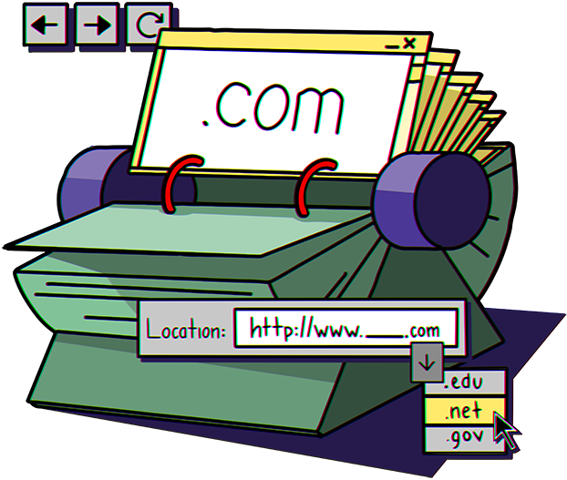

Subscribe to the podcast to receive new episodes as soon as we release them

The year is 1995. The internet starts going mainstream and the dot-com bubble begins its rapid inflation. But 10 years before all of this, a small team of systems administrators made a seemingly simple decision that would turn out to have a monumental impact on these events and would set the course of the internet for the foreseeable future.
Dr. W. Joseph Campbell sets the stage for our season on the internet in 1995. Claire L. Evans explains how hard it was to find anything on the early internet. One team was charged with compiling that information in the early days of the ARPANET. Elizabeth "Jake" Feinler recounts being the internet’s sole librarian in those early days, and how she helped come up with the rules for future domain names. Paul Mockapetris describes designing the domain name system they later implemented as the internet went from a public network to a private business. And Ben Tarnoff explains the results of that increasingly privatized internet.
00:06 - Speaker 1
As we approach the turn of the century, communication methods are changing drastically.
00:11 - Speaker 2
Internet technology uses computer networks to link people around the world. Millions of Americans have a personal...
00:17 - Speaker 3
Millions of Americans have a personal computer in their home. These Americans can glimpse into the future online.
00:22 - Speaker 4
By the year 2000, every business will be on the internet.
00:28 - Saron Yitbarek
1995. That year, the world's imagination was sparked. A networking technology that few understood had been developing for decades, and then it burst into the public sphere. Movies like The Net and Hackers and Johnny Mnemonic captured our new obsession. An arcane series of virtual tubes called the internet had been brought to life by the creation of the World Wide Web. And tens of millions of people were jumping online.
01:05 - Saron Yitbarek
I'm Saron Yitbarek and this is season 7 of Command Line Heroes, an original podcast from Red Hat. This season, we're looking at that year—1995—from every angle. We're exploring how that moment in our tech history gave birth to the online world we know today. From e-commerce to web design, to search engines, and so much more.
01:31 - W. Joseph Campbell
It certainly was a watershed year in the popular emergence of the internet.
01:38 - Saron Yitbarek
Professor W. Joseph Campbell is the author of 1995: The Year the Future Began.
01:45 - W. Joseph Campbell
It was a moment when the internet goes from obscurity to near ubiquity. There was a critical mass of users, there was a critical mass of content and there was a relatively easy way to get there. And that way to get there was the Netscape browser. And it really just took the web from, and the internet from, obscurity to prominence during that 12-month period.
02:12 - Saron Yitbarek
In fact, Netscape's IPO on August 9th of that year made it a multi-billion dollar success overnight.
02:21 - W. Joseph Campbell
The IPO of Netscape really ignited a great deal of interest and made it very clear to lots of people that there was a lot of money that could be made online.
02:32 - Saron Yitbarek
The dot-com bubble was born. While movie-goers were lining up to see Sandra Bullock in The Net, investors were lining up to buy stocks in anything that had a dot-com attached to its name. The tech-dominated NASDAQ Composite index would quadruple over the next 5 years. That dot-com bubble transformed the tech landscape and few investors had any idea what those words “dot-com” really meant. So we're launching our new season with a little history lesson for those mid-90s traders. It's the story of the invention of dot-com itself. Before the dot-com boom—long before you could hop on GoDaddy to grab yourself a domain name–there was a woman you'd have to call. The keeper of all domains. Her name was Elizabeth "Jake" Feinler.
03:34 - Saron Yitbarek
Back in 1972, the newly-built ARPANET, godfather of our internet, consisted of about 30 computers. “Three-zero.” And one of the major nodes of that fledgling network was at Stanford Research Institute. That's where information scientist, Elizabeth "Jake" Feinler, worked. And people like her, wizards of information management, indexing and data organization, were about to become incredibly useful. Because networks require order as they grow–or else they collapse. Douglas Engelbart, the engineer who became famous for his work on human-computer interactions, was then running the Stanford lab. And he enlisted Feinler, giving her the task of writing a resource handbook for the first demo of the ARPANET. Basically, that was a contact list of technical liaisons and administrative liaisons for all the host sites. Organizing information for a network of 30 computers was easy enough. This was, after all, just supposed to be a way for researchers to bounce information back and forth between universities. Not a ton of pressure organizing something like that. But–and you're probably ahead of me here–that was about to change.
05:04 - Saron Yitbarek
Try to imagine: a few dozen host sites and a few dozen universities, military bases, and research centers. Each one with different resources. The military sites were way more secure, of course. The university sites were often run by students. There was no consistent organization.
05:24 - Claire L. Evans
There was no search engine to any of this.
05:26 - Saron Yitbarek
Claire L. Evans is the author of Broad Band: The Untold Story of the Women Who Made the Internet.
05:34 - Claire L. Evans
In order for it to be even remotely useful to anyone, they had to know exactly what they were looking for, where that something was, when it was online, and who could give them access. And the only way they could really do that was by getting in touch with Jake Feinler and the Network Information Center, who had all of that information on hand.
05:56 - Saron Yitbarek
That Network Information Center–also called the NIC–was run by the Stanford Research Institute (SRI). And that "Jake Feinler" is actually Elizabeth Feinler. Jake's a nickname she's had since she was a kid. Just 2 years after creating her resource handbook for the ARPANET, Feinler was the principal investigator planning and running the NIC. And, like Evans just mentioned, the NIC was essentially serving as Google for the ARPANET.
06:26 - Claire L. Evans
They were the only people who knew where anything was.
06:30 - Saron Yitbarek
And that was okay, at first...
06:32 - Claire L. Evans
They had a job that got very complicated very, very quickly. So it went from a few dozen host sites to thousands in a matter of years. And Jake's project at the NIC went from being a 2-person operation with 1 telephone and a file folder of index cards to, like, an $11-million military project with 6 phone lines ringing off the hook from 5 AM to midnight, every day, for 20 years.
06:55 - Saron Yitbarek
With time, the flood of phone calls became a flood of emails. And Feinler's team was working hard to keep up.
07:02 - Claire L. Evans
All of a sudden, it becomes a really complicated job to actually keep track of where all those host sites are and manually proofing that document, which was called the host table. It was something that was done twice a week. It was an incredibly tedious, kind-of burnout job. And it became too big for some of the hosts on the network to even be able to download the file from the NIC regularly enough to have updated information. It became something that was kind of Sisyphean in nature.
07:31 - Saron Yitbarek
That host table Evans mentions, the original domain registry for the ARPANET, was just a flat ASCII text file that folks could download directly from the NIC servers. It was literally a spreadsheet listing all the different hosts and their addresses. A “Yellow Pages” for the networked world. Soon, that rudimentary Yellow Pages became the original WHOIS: a dedicated server at the NIC, where you could look up names and contact information for every authorized user on the network. They were inching toward a new form of organization.
08:08 - Claire L. Evans
I mean, she literally answered the phone for the internet and answered the email for the internet for a really long time. So she knew how explosive that growth was. And I think as an information scientist, as someone who came from library science, she knew that it was going to be something that could get really chaotic and impossible to manage if it wasn't structured correctly, and early on, with thought in mind for how to preserve core structures amid all this growth.
08:37 - Saron Yitbarek
And so, as the small steps were outpaced by the network's growth, it became increasingly clear. Big structural arrangements were going to be necessary. A way to move beyond the host table and the WHOIS. And that would require an information scientist of imagination.
08:56 - Elizabeth J. Feinler
Well, I always felt like "Alice through the looking glass."" It was just a whole different world.
09:03 - Saron Yitbarek
Feinler herself spoke with us from her home in California. She's now 90 years old. She still lights up when talking about her work on Douglas Engelbart's team.
09:14 - Elizabeth J. Feinler
Doug's group, they're wearing Birkenstocks and jeans, and no bras, and beards to down to here. Because everybody at SRI was saying, “What's with these people up on the second floor?” They were very strange for the time, in the way they were dressed and the way they were acting. It was a lot of fun. It was more like a club, in a way. The way everybody knew everybody and wanted to make this thing work, because we knew, just had this feeling it was good stuff, you know.
09:49 - Saron Yitbarek
But just think what that club was demanding of Feinler and her team. They were providing the map, the manual, the address book that made the ARPANET usable. They were archiving and indexing its documentation, coordinating technical liaisons, managing the requests for comments. They were the hub and the call center for the whole enormous project.
10:13 - Elizabeth J. Feinler
What our problem was, was running that database and upgrading it and doing the programming needed, because nothing ran on the machines during the day. And they were just so slow. During the days we were answering telephones and emails and people's questions and problems. And during the night, we were trying to run programs.
10:38 - Saron Yitbarek
The simple manual approach of organizing all the network’s users was growing more untenable by the day.
10:45 - Elizabeth J. Feinler
Oh, it could be anything. They want a document. They want to know how to use something. They want to know how to contact somebody. We had a hotline. So, it was, "How do I get on the ARPANET? Who's at the site? How do I do this program? Where is this document?"" It didn't matter—anything you could think of that a reference desk would get, that's what we got.
11:08 - Saron Yitbarek
A Yellow Pages, a spreadsheet, a reference desk. However you want to describe the project, it was more than mere humans could manage. And that was the moment when Feinler truly organized those online crowds for the very first time. She didn't know it, but Feinler was preparing the internet for that moment Professor Campbell described. The moment in 1995, when the early internet would transform into an information superhighway. It was all being prepared in the offices of Elizabeth Jake Feinler. So, that flat text file that indexed all domain names needed to be replaced. But with what? One computer scientist had a solution.
12:01 - Paul Mockapetris
Hi, I'm Paul Mockapetris.
12:04 - Saron Yitbarek
Around 1982, Mockapetris was asked to look at different ideas for replacing SRI's host table. He checked out 5 different proposals.
12:15 - Paul Mockapetris
I looked at those proposals and decided that something completely different would be a better idea. So I designed the Domain Name System, and that's how it came to be.
12:29 - Saron Yitbarek
Mockapetris is being a bit modest. The DNS delivered several advantages. For starters: it replaced all those numerical addresses with names that humans could remember. Navigating the internet no longer meant looking up a string of digits on some spreadsheet. By 1986, a few years after the DNS specs came out, the old host table had fallen to the wayside. But that wasn't the only advantage to the new system.
12:58 - Paul Mockapetris
The really important things about the Domain Name System was that people could get their own domain and then manage the names under it. So that for example, MIT came along and we gave them mit.edu, and whenever they wanted to change their network, they could do that. They didn't have to call up SRI and find out that it was only open from 9 a.m. to 5 p.m. They could manage their own space. That was one part of the magic, to let people separately manage their own names and addresses and so forth.
13:29 - Saron Yitbarek
So the Domain Name System began to relieve what had become an impossible task for the people on Feinler's team.
13:39 - Paul Mockapetris
The second part of the magic was the system was set up so that it could itself tell a server at UCLA or anywhere else how to find the servers at MIT that had that information.
13:53 - Saron Yitbarek
Mockapetris had delivered an elegant form of automation. What he didn't know was that he was arranging a system that would define our lives.
14:04 - Paul Mockapetris
There's a funny thing that runs through a lot of the internet history, which is people talk about how they could have never done what they did if people had realized how important it was. Vint Cerf and Bob Kahn that invented the IP and TCP protocols say that in their Turing Award speech. And people always ask me how I got the fabulous job of designing the DNS. And the answer was that the experts of the time, they thought it was a nice little problem for a recent graduate with a new PhD to work on. But it turned out to be a fundamental building block of the internet that let us get to things like the web.
14:46 - Saron Yitbarek
That's a key point he just made. You can't imagine the World Wide Web that emerged in 1995 without something like the Domain Name System coming into place in the ’80s. It would be impossible to navigate. Most people would never bother trying. Preparing the ground for that new web experience required more than just the delivery of the DNS, though. Feinler's team had a revolutionary task of their own.
15:16 - Elizabeth J. Feinler
That was how we got into naming the top-level domains.
15:20 - Saron Yitbarek
Feinler's team established dot-gov, dot-mil, dot-org and the rest. But—despite best intentions—choosing names for those top-level domains and deciding who gets what was sometimes fraught. Lots of large companies came knocking, saying they wanted top-level domains of their own. But Feinler made the decision early on that the organization of the internet would be more neutral than that.
15:46 - Elizabeth J. Feinler
I felt that the domains had to be generic, and also the structure of the domains was going to be very different. Military structure was not going to be the same as the National Science Foundation. I mean, they just were different worlds. So, the idea would be you came to the top level, you picked which one you wanted, and then after that, you agreed to whatever their terms for the structure were.
16:12 - Saron Yitbarek
Mockapetris remembers those conversations when that neutral sense of organization was anything but guaranteed.
16:20 - Paul Mockapetris
There were people that said that the top-level domain should be phone companies because they would naturally own the networks. There were people that said, "Oh, no. It should be network names." On and on and on. And I said, "No, the names should be totally independent. What we need to do is to think about having the country codes, which will allow us to placate all the different countries that want to do their own thing." And we should try some of these, what are now known as generic, top-level domains, like dot-com.
16:51 - Saron Yitbarek
At the time, Feinler worried that the U.S. government would decide, "Hey, DARPA isn't a standards body. So hand all these decisions over to the NBS"—the National Bureau of Standards. But, in the end, they were left alone, and the top-level domain system took hold. Soon, as a kind of afterthought, Feinler realized they would need another domain name–one for commercial entities. At the time, almost everyone online was associated with a government agency or university. So making room for businesses didn't feel like a priority.
17:30 - Elizabeth J. Feinler
We didn't know where they would land. They weren't quite org and they weren't quite government. And I was the one that said something like, "Use b-u-s."
17:39 - Saron Yitbarek
"Bus" for "business." But that sounded too close to pieces of hardware that had the same name. They went back and forth. Dot-bus. Dot-biz with a Z. And, when a young system architect on her team, Ken Harrenstien, was tasked with setting it up, he chose dot-com for "commercial."
18:00 - Elizabeth J. Feinler
He was the one that implemented the whole thing. So he just decided to make it dot-com, and who knew? It was just an afterthought.
18:11 - Saron Yitbarek
It was that simple. Just a holding pen for certain contractors that didn't fit under dot-gov or dot-org. And just like that, one day in 1985, dot-com was born. It would take 10 years for that seed to grow into maturity. But the ultimate year of internet optimism, 1995, was already taking shape. Setting up the Domain Name System meant that, suddenly, all that organization and indexing was scalable. Naming responsibilities were dispersed to a number of servers across the network. The process wasn't centralized anymore. Different groups could manage and organize themselves as they pleased, all while remaining synchronized with the larger network. And that set the stage for some truly extraordinary growth. It also set the stage for a little formula that, today, we take for granted. Here's Claire L. Evans again.
19:14 - Claire L. Evans
We still use the same addressing format that they came up with, which is user at host dot domain, right? Well, that's what email addresses look like now.
19:22 - Saron Yitbarek
User at host dot domain. That basic address grammar that we use, every day, to navigate the internet. Suddenly, we weren't a chaotic crowd manually organized by a team at Stanford. Suddenly, we were a self-sustaining system. A system not just of email addresses, but web addresses too.
19:43 - Claire L. Evans
That explosive communications medium quality of the internet was not anticipated by its builders. And it was something that the administrators of the internet had to kind of hustle to make sure it wasn't going to destroy the system that they had built.
19:58 - Saron Yitbarek
We know the internet didn't get destroyed. And yet the process of managing all that growth was about to change once again. For a few years there, the new DNS registry could happily distribute IP address blocks and domain names. But eventually, even that level of automation was more than the U.S. government wanted to handle. In 1993, just as internet use was really taking off, the National Science Foundation awarded a five-year contract to a company called Network Solutions. The task of registering about 7,500 addresses each year would now be theirs. Of course, those numbers were growing–fast. Two years later, Network Solutions processed 145,000 new addresses. Meanwhile, millions of users were flooding online. No single entity was going to be able to handle such exponential growth. And as the process of indexing, organizing, managing the internet grew larger and larger with each iteration, the fundamental nature of the internet's organization began to change, too.
21:19 - Claire L. Evans
I think the spirit of the early internet was about this kind of convivial sharing of resources, the collective building of something larger than the sum of its parts. It was really mostly used and inhabited by its builders. So there was this spirit of kind of collective enterprise.
21:37 - Saron Yitbarek
As the user base grew, though, the potential for profits was growing, too. All that tech was about to be monetized. Soon, Network Solutions was charging—$100 bucks for 2 years of registration. Meanwhile, in the early ’90s, the National Science Foundation (NSF) handed operation of its backbone to a consortium of Michigan universities that were working with companies like IBM and MCI. But we'll get into that story in our next episode. For now, what you need to know is that the NSF believed that the private sector was a necessary partner if the internet was ever going to grow to its full potential. Ben Tarnoff, author of the book Internet for the People, told us about that moment when the NSF was overseeing privatization. He describes the bind that Stephen Wolff, the foundation's director, was in.
22:35 - Ben Tarnoff
Key problems that he was looking at, it's primarily a capacity problem. How are we going to find the money to continue to upgrade our backbone, to keep pace with the type of infrastructure investments that we will need to make in order to accommodate all of this demand, as more and more people want to use the internet? And how are we going to broaden out to serve not just the academic community, not just the researcher community, but the wider public?
23:03 - Saron Yitbarek
As non-commercial as the internet may have been, there was general agreement that privatization was the only way forward.
23:11 - Ben Tarnoff
Indeed, the political climate at the time in the early to mid ’90s—which was an intensely deregulatory political climate—there were very few opposition figures who sounded the alarm or raised criticisms to these moves, at least in the mainstream political space.
23:29 - Saron Yitbarek
Government would continue to give away and delegate functions to the private sector. And that process has been rolling out for decades. The handoff hasn't only moved toward companies, though. Non-profits have taken over from the government too.
23:45 - Ben Tarnoff
So there's a non-profit called ICANN, The Internet Corporation for Assigned Names and Numbers, which among other things, governs the Domain Name System. And they cut an arrangement in the late ’90s when ICANN was created, with the Commerce Department, which at the time still controlled the Domain Name System nominally. But they reached an agreement where ICANN essentially will run it on the Commerce Department's behalf. And in fact, that arrangement was in place until 2016, at which point ICANN formally took sole control over the Domain Name System.
24:26 - Saron Yitbarek
The withdrawal of government and academic management—the withdrawal of people like Feinler–felt inevitable. But Tarnoff feels it may have been more ideological in the end.
24:38 - Ben Tarnoff
There was nothing inevitable, nothing technically mandated, about the path that the internet took. It could have taken a different path, and it could still. So I think the privatization of the internet was absolutely an ideological choice. The people who were involved in engineering it were not primarily technical. They were politicians, bureaucrats, policy makers who were participating in this broad ideological consensus around neoliberalism, around deregulation, around the need for the private sector to lead.
25:11 - Saron Yitbarek
When the people organizing and indexing the internet are no longer library scientists like Feinler, that changes the rules. For example, compare Feinler's decisions about top-level domains with this more recent decision.
25:27 - Ben Tarnoff
ICANN has released these new top-level domains and they released one for instance called dot-sucks. And they were accused of being essentially predatory for releasing this domain because every brand, every corporation in the world has to go out and buy their dot-sucks domain.
25:53 - Saron Yitbarek
The way we organize and manage the internet matters. And when you remember the pioneers who organized it in the first place, the way their decisions live with us still, you can't help but wonder how our decisions are organizing the future right now. When you follow the origin story of top-level domains, you eventually get a story about not just organization, but privatization. And nowhere is that more obvious than in that crazy moment in 1995, when the dot-com bubble began. You had a capitalist feeding frenzy epitomized by two simple words, that a public institution had set up: dot-com. And yet, people like Feinler who managed and organized the online arena, never got rich and famous.
26:55 - Saron Yitbarek
All those investors back in 1995, probably thought they were pretty smart for picking up any stock with a dot-com in its name. And you can bet that when Network Solutions sold to Verisign for $21 billion, they were pretty pleased with themselves, too. But the people who really gave dot-com its value were heroes like Jake Feinler, Paul Mockapetris, and Ken Harrenstien.
27:22 - Saron Yitbarek
You can check out loads of bonus material about Feinler and the invention of top-level domains over at redhat.com/commandlineheroes. Next time: we zoom in on that day in 1995 when the NSFNET was shuttered and the internet's privatization took a giant leap forward. I'm Saron Yitbarek and this is Command Line Heroes, an original podcast from Red Hat. Keep on coding.
More from the episode...
About the art
This season, we’re using the artwork to blend the world before 1995 and one that came after it. We’re taking the analogues of the episodes’ subjects and updating them with their online equivalents. For episode 1, we took the rolodex: Once an object that held all the contact information a person had accumulated. But now, the rolodex is gone. Thanks to the "dot-com" "dot-net" "dot-edu" and the overall DNS, we classify our contacts in a giant, digital rolodex.
Karen King
Senior Designer, Red Hat
Further Reading
Each episode is based on a lot of research. Here are just a few of the resources we used to learn about the NSFnet:
Before Google and GoDaddy, There Was Elizabeth Feinler by Cade Metz
Why Does the Net Still Work on Christmas? by Cade Metz
A Brief History of the Domain Name by Max
Knoblauch
Host Names On-Line by M.D. Kudlick
The Frenzy Over The Internet's Fee Enterprise by Kara Swisher

In 1995, there were about 350,000
domain names registered in the world.
Near the end of 2020, there
were 370.7 million.
Featured in this episode
Get the newsletter
After each episode drops, we send commentary from the Command Line Heroes team, as well as links that help you take a closer look at the topics we cover. It’s as simple as that.
Presented by Red Hat
For 25 years, Red Hat has been bringing open source technologies to the enterprise. From the operating system to containers, we believe in building better technology together–and celebrating the unsung heroes who are remaking our world from the command line up.